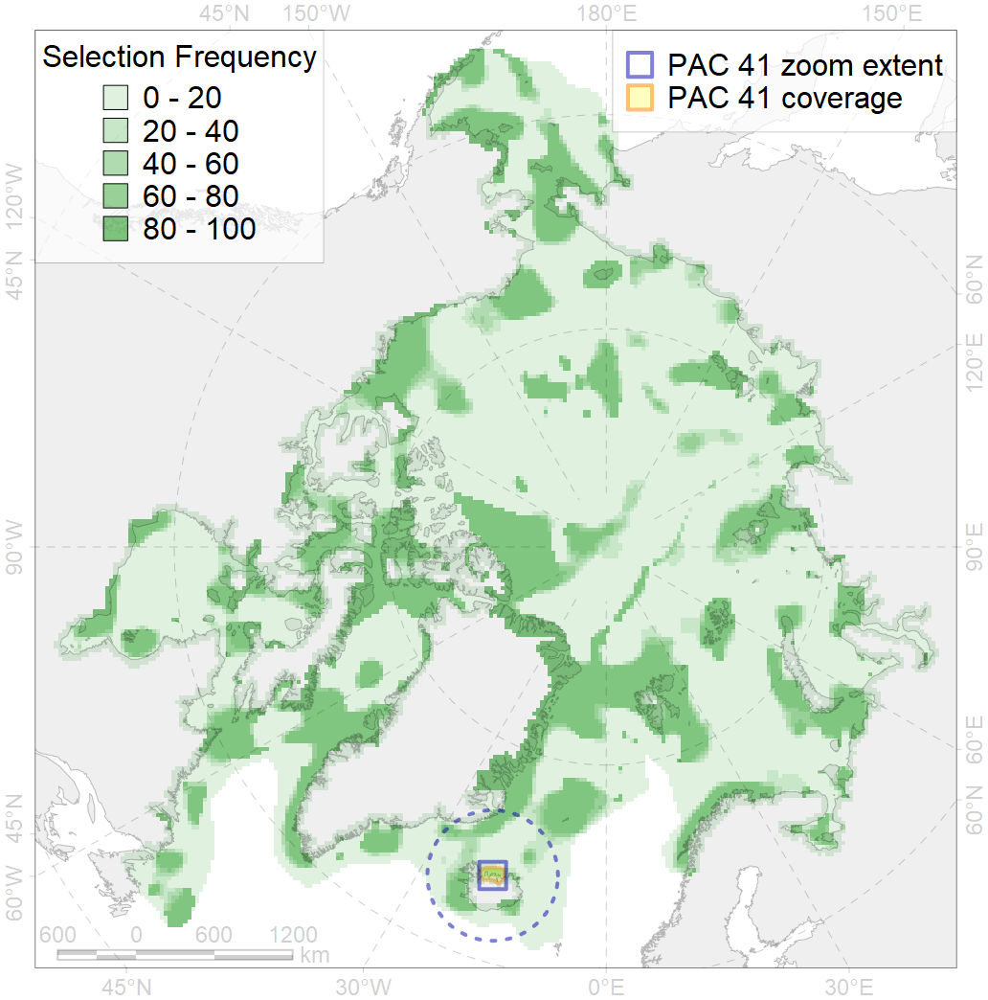
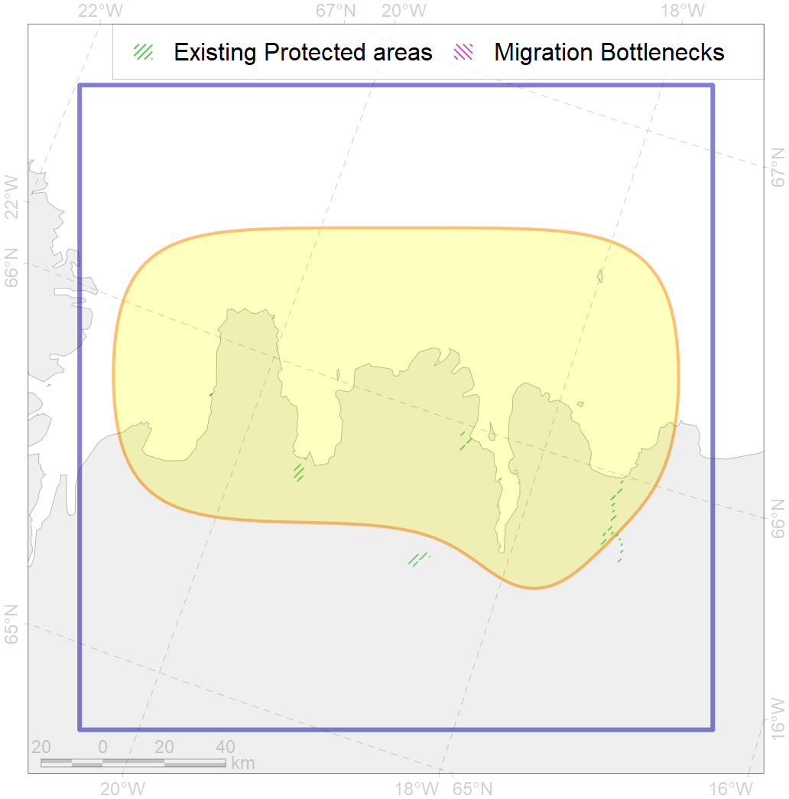

41
For more information regarding this PAC and to conduct custom spatial analysis using the PAC data or any spatial query, please consult Accenter.

0
CFs entirely within the PAC area
1
CFs at least 25% within the PAC area
0
CFs with their target entirely achieved in the PAC
1
CFs with at least 50% of their target achieved in the PAC
| CF ID | CF Name | Proportion in the PAC | Conservation Target | Contribution to ArcNet Target Achievement | PAC’s Contribution to the Achieved Target |
|---|---|---|---|---|---|
| 6057 | Common eider (Somateria mollissima borealis) wintering grounds, Spitsbergen | 36.6% | 55.2% | 29.6% | 29.0% |
| 7210 | Benthic communities, V.1.1.2. North Iceland glacial troughs | 21.7% | 19.3% | 66.9% | 52.6% |
| 7226 | Kelp forests, Iceland | 13.1% | 15.0% | 34.2% | 11.9% |
| 6060 | Common eider (Somateria mollissima borealis) breeding / moulting grounds, Iceland | 11.8% | 55.2% | 9.6% | 9.2% |
| 6086 | Long-tailed duck (Clangula hyemalis) moulting / migration stopovers, Iceland | 11.4% | 52.8% | 12.5% | 12.3% |
| 6054 | Common eider (Somateria mollissima borealis) wintering grounds, Iceland | 10.8% | 55.2% | 8.9% | 8.4% |
| 4086 | Fish communities, Iceland Zoogeographic District, Subarctic Transitional-Atlantic Province, Arctic Region | 10.7% | 20.0% | 31.0% | 18.9% |
| 7208 | Benthic communities, V.1.1. North Iceland shelf | 9.2% | 17.0% | 30.4% | 20.1% |
| 5055 | Harbour porpoise (Phocoena phocoena) feeding grounds, Iceland | 4.7% | 6.0% | 45.2% | 7.1% |
| 7029 | Benthic communities, Iceland Zoogeographic region | 4.4% | 14.9% | 17.2% | 7.7% |
| 7209 | Benthic communities, V.1.1.1. North Iceland medium and low profile shelf | 3.6% | 13.7% | 15.0% | 6.9% |